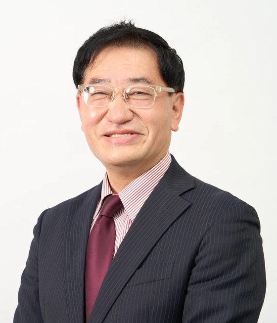

オフィス紹介

小櫃 博こびつ ひろし
中小企業診断士／ブルーシフト・パートナーズ 代表
浜に、にぎわいと稼ぐ力を。それが私の仕事です。
漁協・自治体・浜の事業者のみなさまと、同じ目線で一緒に考えるパートナーでありたいと思っています。
ごあいさつ
高校生のころ熱帯魚を飼育して以来、いつか水産に関わる仕事をしたいと考えてきました。 生命保険会社で30年以上、情報システムの企画・開発・運用に携わり、子会社では総務やシステム企画を担いました。 2007年に中小企業診断士となり、勤務のかたわら支援活動を続け、2022年から専業として中小企業の経営を支援しています。
漁村を訪ねて感じたのは、漁業だけでは成り立たないということです。観光、加工、流通、地域との共生。 海業は、その全体をつなぐ取り組みです。上から指導するのではなく、同じ目線で一緒に考えるパートナーでありたいと思っています。
休日はSUPに乗り、トライアスロンの練習で海を泳いでいます。海は、仕事の場であり、遊び場でもあります。
代表者
| 氏名 | 小櫃 博（こびつ ひろし） |
|---|---|
| 資格 | 中小企業診断士（2007年登録）／認定経営革新等支援機関 |
| 経歴 | 生命保険会社にて情報システムの企画・開発・運用に30年以上従事（子会社出向時は総務・システム企画を担当）。2022年より中小企業診断士として専業 |
| 専門分野 | 財務・会計、資金調達、補助金申請支援、DX／AI活用、デジタルマーケティング、創業・スタートアップ支援、事業承継 |
| 対応業種 | 水産・観光業、情報通信サービス業、飲食業、サービス業ほか |
| 所属 | 千葉県中小企業診断士協会／東京都中小企業診断士協会／マリンITワークショップ（公立はこだて未来大学）／マリノフォーラム21 |
事務所概要
| 名称 | ブルーシフト・パートナーズ（Blue Shift Partners） ※ HIRO経営コンサルティングの海業専門ブランドです |
|---|---|
| 開業 | 2009年2月（HIRO経営コンサルティング）／2026年9月 ブルーシフト・パートナーズ開始 |
| 所在地 | 千葉県 |
| 連絡先 | info@blueshift-partners.com |
| 事業内容 | 海業・水産業の経営支援、事業計画策定、補助金・融資の申請支援、AI活用支援、セミナー・研修 |
屋号の「ブルーシフト」は、天体が近づくときに光が青くなる現象に由来します。海の青と、前へ進む力を重ねました。
まずはご相談ください
「何から始めればよいか分からない」という段階でも構いません。初回のご相談は無料です。
お問い合わせ：info@blueshift-partners.com